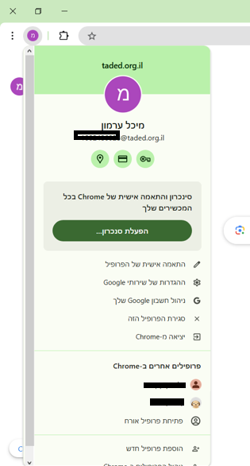

DRIVE משרד החינוך
עמוד זה מציג את היתרונות, דרכי ההתחברות והאפשרויות הנוספות של שימוש ב-DRIVE של משרד החינוך.
יתרונות DRIVE של משרד החינוך

בטיחות: מערכת מאובטחת ברמה גבוהה, בניגוד לחשבונות פרטיים.

שליטה בגישה: רק למי שאישרתם יש גישה לקבצים.

אחסון: אחסון ללא הגבלה – בלי צורך לשלם על מקום נוסף.
התחברות ראשונית - הדרך הארוכה
כדי להתחבר ל-DRIVE של משרד החינוך בפעם הראשונה, יש לבצע את הצעדים הבאים:
- כניסה לאתר משרד החינוך.
- שימוש בקוד משתמש וסיסמה שניתנו לך.
- מעבר לאימות ראשוני.
ראו את התמונות למטה לתהליך:

דרכים אחרות לגישה ל-DRIVE
- שיתוף עם המייל הראשי: ניתן ליצור תיקייה לשיתוף עם המייל הרגיל שלך. העלה קבצים ל-DRIVE של משרד החינוך ותוכל לגשת אליהם דרך המייל האישי שלך.
- גישה דרך דפדפן כרום: ניתן ליצור משתמש בדפדפן כרום עם פרטי המשתמש של משרד החינוך, כך שתוכל לגשת אליו כמו למייל רגיל. ייתכן שתידרש לאימות פעם בתקופה. 
קישורים למידע נוסף
אייקונים של Security icons, Access icons, ו-Storage icons נוצרו על ידי Freepik - Flaticon